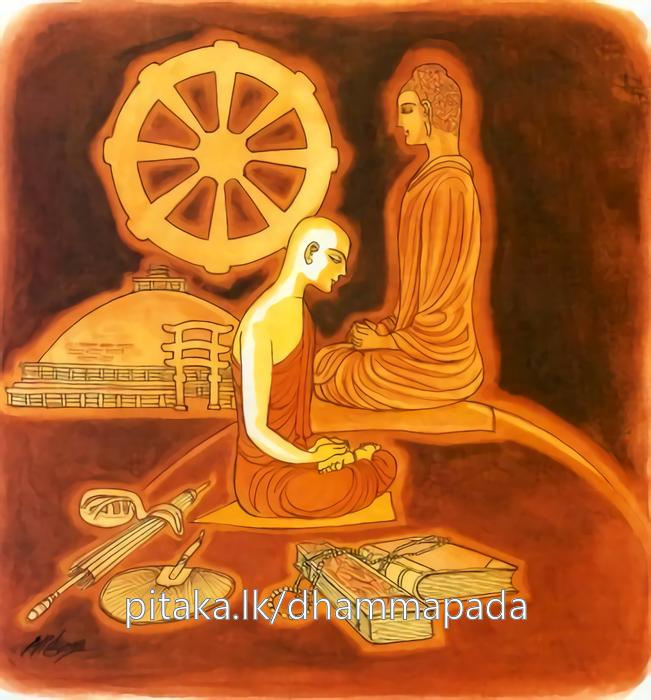

25-4 ධර්මාරාම ස්ථවිරයන් වහන්සේ
මෙම කතාව ධම්මපද අටුවාවෙන් ද කියවන්න.
ධම්මාරාමො ධම්මරතො ධම්මං අනුවිචින්තයං
ධම්මං අනුස්සරං භික්ඛු සද්ධම්මා න පරිහායති.
(ශමථවිදර්ශනා) ධර්ම නිවාසස්ථාන කොට ඇති, ධර්මයෙහි ඇලුනු, ධර්මය නැවත නැවත සිතන, ධර්මය නැවත නැවත සිහි කරන භික්ෂු තෙම සද්ධර්මයෙන් නො පිරිහෙයි.

බුදුරජානන් වහන්සේ “සිවු මසක් ගිය තැනේ දී මාගේ පිරිනිවීම වන්නේ ය”යි වදාළ කල්හි නොයෙක් දහස් ගණන් භික්ෂූන් වහන්සේලා බුදුරජුන් පිරිවරා උන්වහන්සේ නො හැර හැසුරුණාහ. එහි දී පෘථග්ජන භික්ෂූහු හඬන්නට වැලපෙන්නට වූහ. රහතුන් වහන්සේලාට ධර්මසංවේගය උපන. සියල්ලෝ ම “අපි කුමක් කරමෝ දැ”යි තැන තැන කැටි කැටි ව ඇවිදින්නට වූහ. ධර්මාරාම නම් එක් භික්ෂූන් වහන්සේ නමක් ඔවුන් හා එක් නො වී එකලා ව හුන්හ. ඒ දුටු භික්ෂූන් වහන්සේලා ධර්මාරාම තෙරුන් වෙත ගොස් “ඇවැත්නි! තමුන්නාසේ අප හා එක් නො ව නො බැණ කුමක් කරන්නහු?”යි ඇසූහ. එහෙත් උන්වහන්සේ ඔවුන්ට කිසිවක් නො කියා “මම නො පැහූ රාග ඇතියෙම් වෙමි, බුදුරජානන් වහන්සේත් සිවු මසක් ගිය තැන පිරිනිවන් පානා සේක, බුදුරජුන් ජීවත් ව වැඩ සිටිය දී ම රහත් වන්නට ඕනෑ”යි එකලා ව ම සමූහට හැර දමා ඔවුන් වෙත නො ගොස් බුදුරජුන් දෙසූ දහම් ආවර්ජනය කරමින් සිතමින් සිහි කරමින් කල් ගෙවූහ. එකල්හි භික්ෂූන් වහන්සේලා බුදුරජුන් වෙත ගොස් “ස්වාමීනි! ධර්මාරාම තෙරුන්ගේ සිතෙහි බුදුරජානන් වහන්සේ කෙරෙහි ස්වල්පමාත්ර වූ ද ස්නේහයක් නැත්තේ ය, බුදුරජානන් වහන්සේගේ පිරිනිවීම ගැණ කුමක් කළ යුතු දැ යි අප හා කතා නො කරන්නාහ”යි සැලකොට සිටියහ. එවිට බුදුරජානන් වහන්සේ ධර්මාරාම තෙරුන් කැඳවා “ධර්මාරාම! සැබෑ ද, තමුසේ මා පිරිනිවන් පානා බව දැනත් අන් සබ්රම්සරුන් හා ඒ ගැණ කිසිත් නො බැණ සිටින්නහු?” යි අසා වදාළ සේක. ධර්මාරාම තෙරණුවෝ “ස්වාමීනි! සබ්රම්සරුන්ගේ කීම සැබැ”ය යි කීහ. “ඇයි, උන් හා ඒ ගැණ කිසිත් කතා නො කරන්නහු?”යි අසා වදාළ කල්හි “ස්වාමීනි! මම පුහුදුනෙක්මි, නො පැහූ රාග ඇතියෙම්මි, බුදුරජානන් වහන්සේතේ සිවු මසක් ගිය තැනේ දී පිරිනිවන් පානා සේක, ඉන් පසු අපට පිහිට වන්නෝ කවරහු, ඒ නිසා මම බුදුරජුන් ජීවත් ව වැඩ සිටිය දී ම රහත් වෙමි යි සිතා දැඩි උත්සාහයෙකින් බුදුරජුන් වදාළ දහම් සිතමින්, සිහි කරමින් දවස් යවමි”යි ධර්මාරාම තෙරුන් කී කල්හි බුදුරජානන් වහන්සේ “යහපත, යහපතැ”යි සාධුකාර දී “මහණෙනි! මා කෙරෙහි ස්නේහය ඇති අන් සව්වන් ද ධර්මාරාම වැන්නන් විය යුතු ය, මල්ගඳ ආදියෙන් මා පුදන්නෝ මා නො ද පුදන්නෝ ය, ධර්මානුධර්මප්රතිපත්තියෙහි පිළිපන්නෝ ම මා පුදති”යි වදාරා මේ ධර්මදේශනාව කළ සේක.
ධම්මාරාමො ධම්මරතො ධම්මං අනුවිචින්තයං,
ධම්මං අනුස්සරං භික්ඛු සද්ධම්මා න පරියාහතීති.
ධර්මය වාසස්ථාන කොට සිටි ධර්මයෙහි ඇලුනු ධර්මය නැවැත නැවැත සිතන්නා වූ ධර්මය නැවැත නැවැත සිහි කරන්නා වූ මහණ තෙමේ සද්ධර්මයෙන් නො පිරිහෙන්නේ ය.
ධම්මාරාමො = ශමථවිදර්ශනාධර්ම වාසස්ථාන කොට සිටි. ශමථ විදර්ශනා ධර්ම අරම් කොට ඇති.
ශමථවිදර්ශනාධර්ම තමන්ගේ වාසස්ථානය කොට ගත්, තමන්ගේ සිත රැඳ වූ තැන් කොට ගත් මහණ තෙමේ ‘ධම්මාරාම’ නම්. පංචනීවරණාදී වූ කෙලෙස් සන්සිඳවීම ශමථය ය. “නීවරණාති සමෙතීති = සමථො” යනු ආචාර්ය්යවචනයි. පරිත්ත - මහග්ගත විසින් ඒ දෙපරිදි ය. උපචාරයට පැමිණියේ පරිත්ත ය. අර්පණාවට පැමිණියේ මහග්ගත ය. ශමථය ලෞකික ය. විස්තර කථාව යට කියන ලදි. පඤ්චනීවරණධර්ම හා විතර්කාදිධ්යානාඞ්ග සන්සිඳුවා අෂ්ටසමාපත්ති උපදවා ගැණීම ශමථයෙන් ලැබෙන ඵලය වේ. අෂ්ටසමාපත්ති උපදවා ගන්නහුට ඉදිරියෙහි සිත වැඩීමෙන් පඤ්චාභිඥාවන් උපදවා මරණින් මතු බඹලොව ඉපදිය හැකි ය. මේ ලෞකිකද්ධ්යාන බුද්ධොත්පාදයෙහි මෙන් ම අබුද්දොත්පාදයෙහි ද ලැබෙන්නේ ය. එයට නිසි මගින් සිත වැඩි ය යුතු ය. [1]
සංස්කාරධර්ම පිළිබඳ අනිත්ය - දුඃඛ - අනාත්ම යන තිලකුණු සිතට නගා එහි ලා නිතර නිතර සිත පුරුදු කිරීම විදර්ශනා ය. [2]
ධම්මරතො = ශමථවිදර්ශනාධර්මයෙහි ඇලුනු.
ධම්මං අනුවිචින්තයං = ශමථවිදර්ශනාධර්මය නැවැත නැවැත සිතන්නා වූ.
ධම්මං අනුස්සරං භික්ඛු = ශමථවිදර්ශනාධර්මය නැවැත නැවැත සිහි කරන්නා වූ මහණ තෙමේ.
සද්ධම්මා න පරිහායති = සද්ධර්මයෙන් නො පිරිහෙයි.
මෙහි සද්ධර්මැයි කීයේ සත්තිස් බෝපැකිදම් හා නවලොවුතුරු දහම් ය. යට කියන ලදී. [3]
සප්තත්රිංශත් බෝධිපාක්ෂිකධර්මයන්ගන් හා නවලෝකෝත්තරධර්මයෙන් නො පිරිහෙන්නට නම් සිල්වත් ව සිට ගෙණ මේ ධර්මාරාම තෙරුන් මෙන් ශමථ විදර්ශනා ධර්මයන්හි එක්වන් ව යෙදීගැන්ම ය - නැත, ලෞකිකජීවිතයෙහි බැදුනු සිතැති ව ලාභාපේක්ෂායෙන් කරණු ලබන කිසිවකින් එහිලා කරණ කිසිද උත්සාහයකින් ගිහි පැවිදි කිසිවක්හටත් මෙ කියූ බෝපැකි දම් හා නවලොව්තුරු දහම් නො ලැබිය හැකි ය. බුදුරජානන් වහන්සේ පිරිනිවන් පානා වග දැන දැනත් එහිලා සිත නො යොදවා ධර්මානුධර්මප්රතිපත්තියෙහි යෙදී සිටි ධර්මාරාම තෙරුන්ට උන්වහන්සේ සාධුකාර දී වදාළෝ ධර්මානුධර්මප්රතිපත්තියෙහ් යෙදී ගැණීම ම ශ්රේෂ්ඨ බැවිනි. සසර බිය වශයෙන් ගෙණ සසරින් නිදහස් වනු කැමැති ගිහි පැවිදි හැම දෙනා විසින් කළයුත්තේ මේ ය.
ධර්මදේශනා අවසානයෙහි ඒ මහණ තෙමේ රහත් බැව්හි පිහිටා ගත්තේ ය. ධර්මදේශනා තොමෝ පැමිණ සිටි පිරිසට ද වැඩ සහිත වූ ය.
ධර්මාරාම ස්ථවිර වස්තුව නිමි.